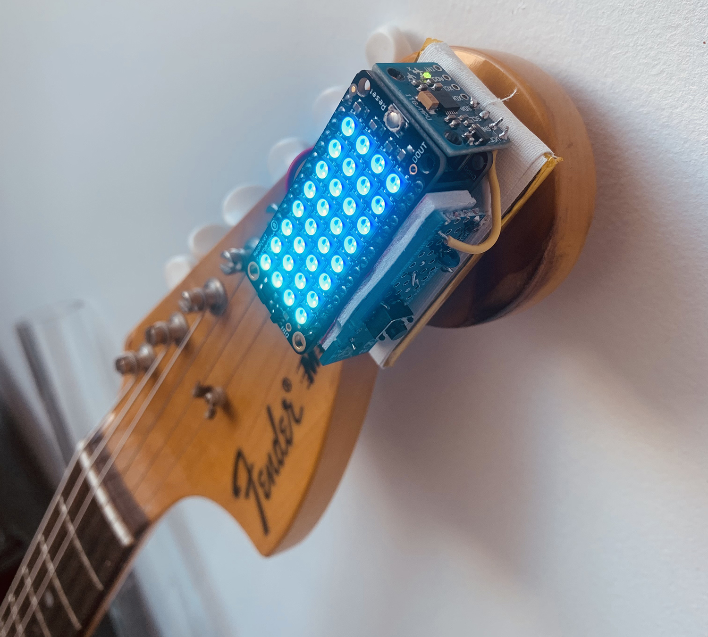
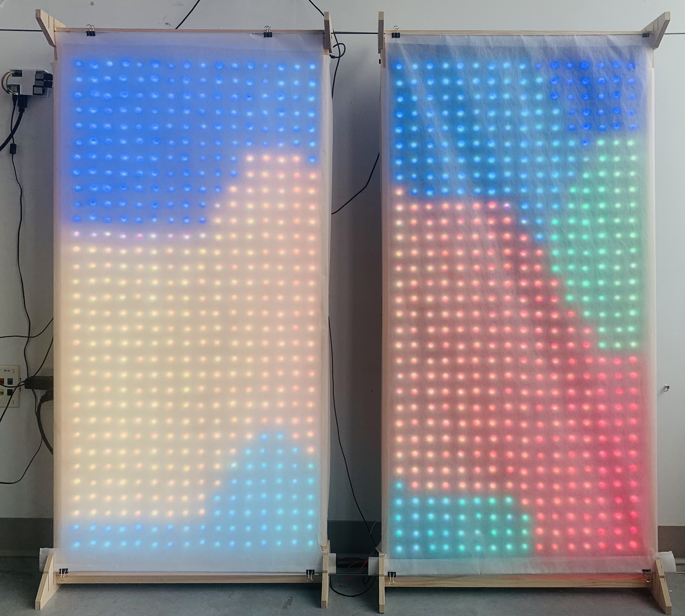
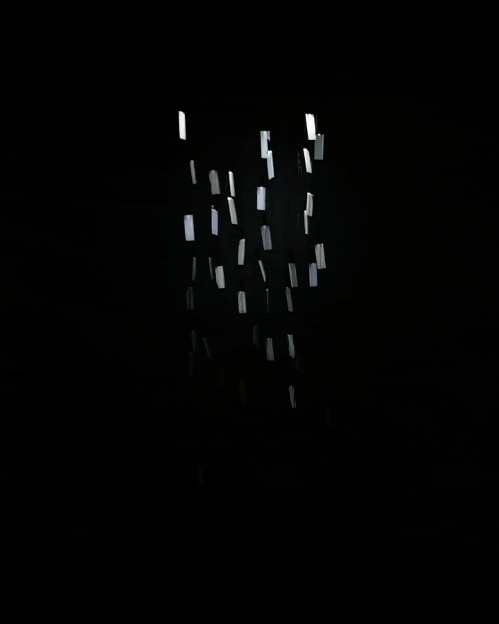
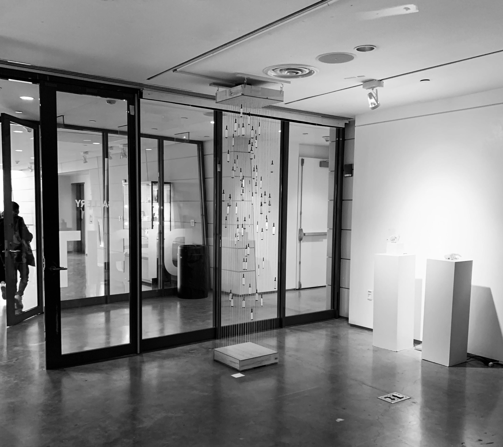
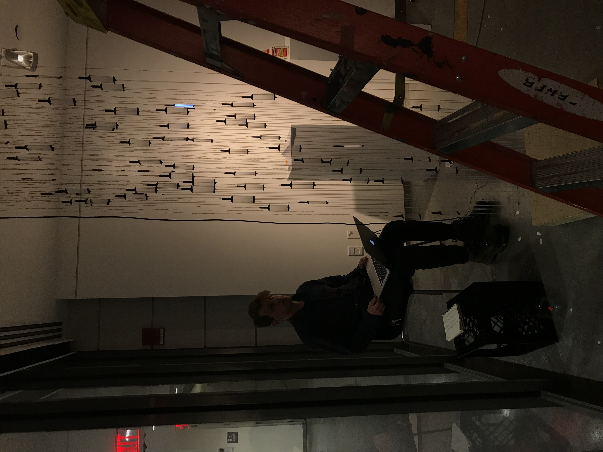
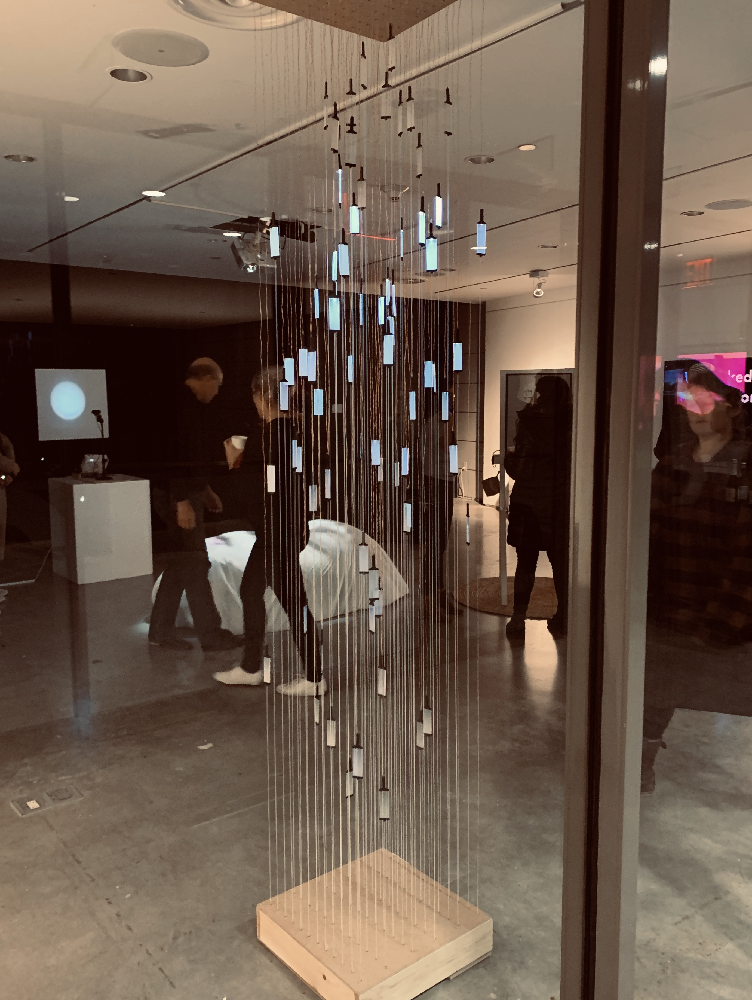
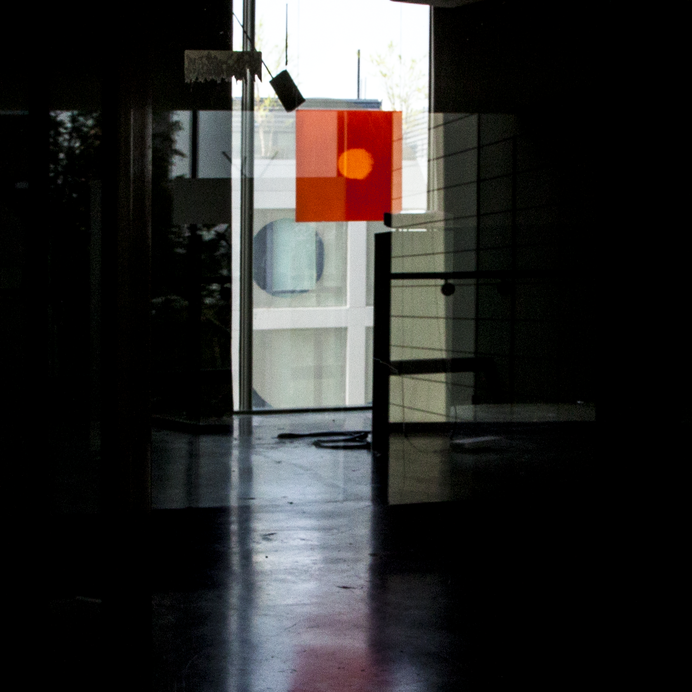
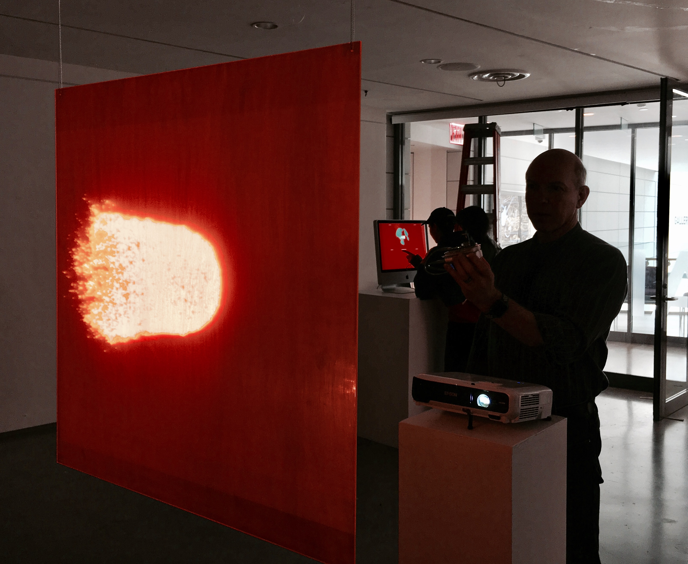
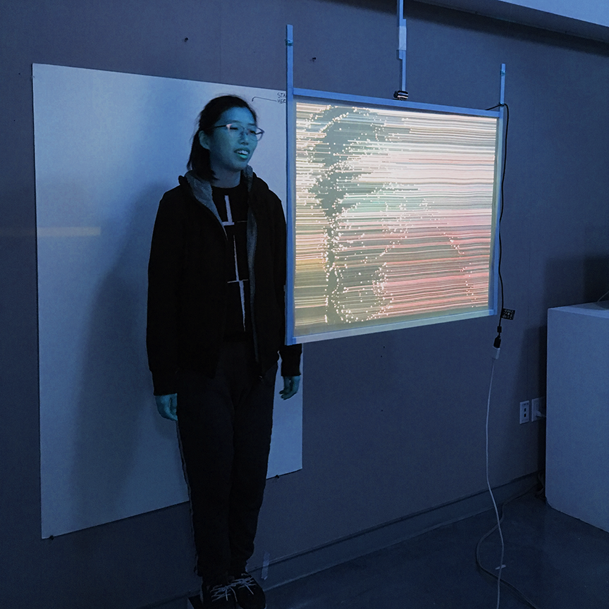
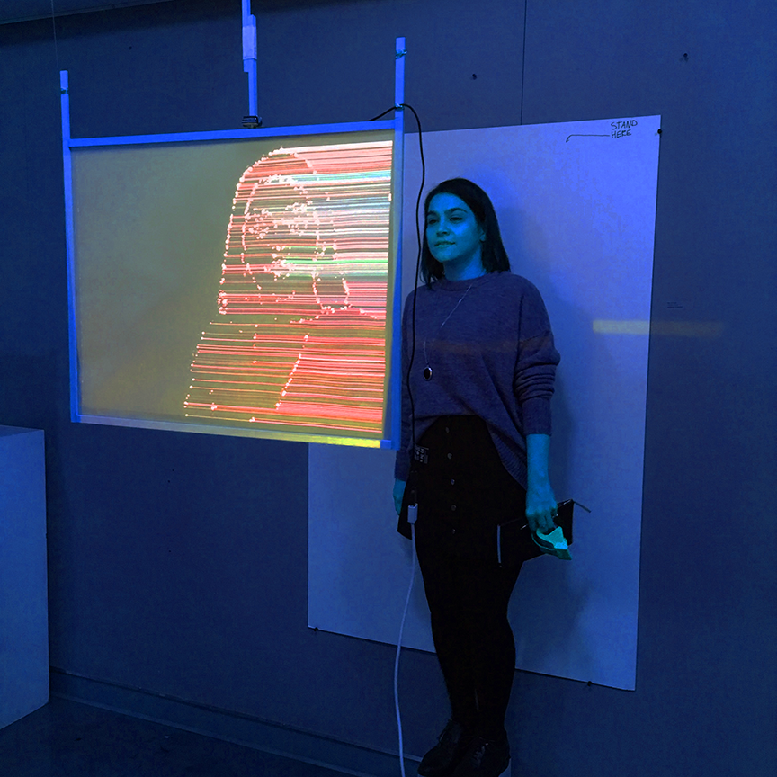

the luminin (1.0)
The Luminin is a motion controlled visual instrument which turns the movements of its performer into a dazzling light show.
Modular in design and built with cheap, easy to obtain materials,
the Luminin is a proof of concept for a DIY platform which would provide musicians and performers with the tools to design and
innovate the visual aspects of their performance while on a budget.
The controller, mounted on a guitar headstock, contains an MPU accelerometer/gyroscope that measures the motions of a performer and transmits the data to a Raspberry Pi.


The Pi runs a Processing sketch which uses data to create a series of animations and displays them across two hand built 26x52” LED screens.

By tying movement to visual output, and bestowing a performer with power to modify and manipulate their
visual environment with a flick of the wrist, the Luminin opens the door for a new artistic
language a syntax for the choreography of light and image.
For updates on the project follow me on instagram
If you are interested in reading my full thesis paper, which goes far deeper into the technical details and philosophical
motivations behind this project, you can download a copy of the pdf here
- action gifs -


ghost harp
'Ghost Harp' is an interactive audio-visual sculpture originally constructed in 2019.


Consisting of 72 LED backlights suspended from the ceiling with copper wire, creating a columnal form,
the piece takes midi input and uses it to animate said LEDs, creating a mesmerizing, ghostlike visual interpretation
of whatever it's music it is fed.
In August 2021, Ghost Harp will become a permanent installation at Pratt Institute's Myrtle Hall





point in passing website
In the summer of 2019, I collaborated with John Soat and Effie Rieper on an experimental website for their design studio

The result was this. A website that can be "played" so to speak.
Each time the site reloads there, a different algorithm controls the elements that populate the screen.

Many of the mathematical principles which run this site I later modified and adapted
to create the visuals in the Luminin
sun deity
“Sun Deity” is an interactive installation that puts the audience in charge of an algorithmically generated ‘sun’.
Using a gestural controller, the user can manipulate the movement and flow of the particle field
which is projected onto a fluorescent acrylic sheet that hangs from the ceiling.


'Sun Deity’ is about the thrill of creation, the burning sense of power that
occurs when an artist (or any variety of creative human) senses that they’ve accessed something interesting.

However, its two-dimensional form and artificial materiality serve to undercut these notions, suggesting instead that this
particular set of human experiences can sometimes prove flatter and more vapid than we like to think.

refracture
"Refracture" was an interactive installation that I designed in 2018

It consisted of a mac mini running a Processing that took a webcam input, chopped it up,
and back-projected it onto a paper screen that hung from the ceiling


The algorithm driving it inspired me to create a series of several video filters.
refracture

box boil

linear boil demo
interactive visualisers
A space for some of my p5js creations. Put on some music and trip out with these
psychworm
animation
my origins as a visual artist